Data Understanding#
Data Understanding adalah tahap untuk mengumpulkan, mengeksplorasi, dan menilai kualitas data yang akan digunakan dalam analisis kualitas udara di Kabupaten Gresik.
Library Python yang Diperlukan#
Berikut adalah library Python beserta kegunaannya untuk mengerjakan proses data understanding ini:
Library |
Kegunaan |
|---|---|
|
Menghubungkan dan memproses data satelit dari server openEO (Copernicus Data Space). |
|
Membaca file hasil batch job openEO berformat netCDF ( |
|
Membaca dan mengolah data tabular (CSV), serta manipulasi deret waktu (time-series). |
|
Komputasi numerik, misalnya perhitungan rata-rata, standar deviasi, dan statistik. |
|
Membuat visualisasi grafik scatter plot (outliers), line plot (noise \(\pm 1\sigma\)), dan grafik komparatif dual X-axis. |
|
Deteksi pencilan (outlier detection) menggunakan algoritma Isolation Forest. |
|
Membuat visualisasi peta interaktif lokasi pengamatan (AOI Kabupaten Gresik). |
Instalasi dapat dilakukan secara bersamaan:
pip install openeo netCDF4 pandas numpy matplotlib scikit-learn folium
1. Collecting (Mengumpulkan Data)#
1.1 Sumber Data#
Data kualitas udara dikumpulkan dari Copernicus Data Space menggunakan layanan openEO. Berikut ringkasannya:
Item |
Keterangan |
|---|---|
Sumber |
Copernicus Data Space |
Layanan |
openEO |
Server |
|
Produk / Koleksi |
Sentinel-5P L2 |
Polutan |
NO2, CO, SO2, CH4 |
Perioda |
24 Agustus 2025 – 24 Agustus 2026 |
Lokasi |
Kabupaten Gresik, Jawa Timur |
1.2 Koneksi dan Otentikasi#
Langkah pertama adalah menghubungkan ke server openEO dan melakukan otentikasi menggunakan akun Copernicus Data Space.
import openeo
connection = openeo.connect("openeo.dataspace.copernicus.eu").authenticate_oidc()
Saat dijalankan, akan muncul tautan untuk login (menggunakan device code flow). Setelah berhasil melakukan login, akan muncul konfirmasi seperti di bawah ini:
Visit (link authentikasi) 📋 to authenticate.
✅ Authorized successfully
Authenticated using device code flow.
Catatan: Proses login/autentikasi sudah berhasil (✅ Authorized successfully). Ini menandakan koneksi ke server Copernicus Data Space berjalan benar.
1.3 Penentuan Area of Interest (AOI)#
Lokasi pengamatan dibatasi pada area di Kabupaten Gresik. Area ini digambar sebagai polygon di atas peta menggunakan alat seperti geojson.io. Data peta (koordinat lokasi) dapat dilihat langsung dari file geojson yang dihasilkan.
{kind=link}
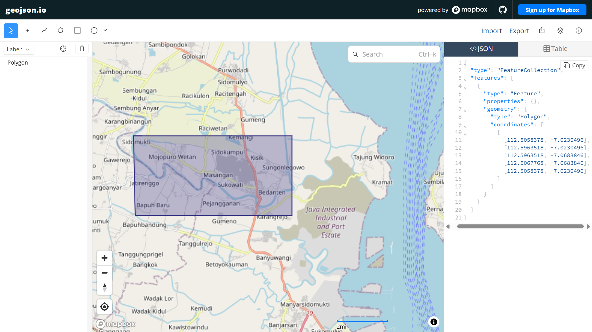
Fig. 1 Polygon Area of Interest (AOI) di Kabupaten Gresik yang digambar pada peta geojson.#
Penjelasan koordinat:
Setiap titik pada polygon memiliki format [longitude (bujur), latitude (lintang)]. Dari polygon tersebut, kita memperoleh:
Atribut |
Nilai |
Keterangan |
|---|---|---|
|
112.6193968 |
Longitude terkecil (batas kiri) |
|
112.6600158 |
Longitude terbesar (batas kanan) |
|
-7.1927923 |
Latitude terkecil (batas bawah) |
|
-7.1514786 |
Latitude terbesar (batas atas) |
Catatan: Untuk data Sentinel-5P,
spatial_extentpadaload_collectionmenggunakan bounding box (kotak batas) yang dibentuk olehwest,south,east,north. Sedangkanaoi(polygon) digunakan pada tahapaggregate_spatialuntuk menghitung rata-rata di dalam area tersebut.
1.4 Memuat Data (Load Collection)#
Data dimuat per polutan, karena server Sentinel-5P di openEO hanya mendukung satu band per proses. Oleh karena itu dibuat 4 notebook terpisah (code-NO2.ipynb, code-CO.ipynb, code-SO2.ipynb, code-CH4.ipynb), masing-masing untuk satu polutan.
a. Memuat Data NO2#
s5 = connection.load_collection(
"SENTINEL_5P_L2",
temporal_extent=["2025-08-24", "2026-08-24"],
spatial_extent={
"west": 112.6193968,
"south": -7.1927923,
"east": 112.6600158,
"north": -7.1514786,
},
bands=["NO2"],
)
b. Memuat Data CO#
s5 = connection.load_collection(
"SENTINEL_5P_L2",
temporal_extent=["2025-08-24", "2026-08-24"],
spatial_extent={
"west": 112.6193968,
"south": -7.1927923,
"east": 112.6600158,
"north": -7.1514786,
},
bands=["CO"],
)
c. Memuat Data SO2#
s5 = connection.load_collection(
"SENTINEL_5P_L2",
temporal_extent=["2025-08-24", "2026-08-24"],
spatial_extent={
"west": 112.6193968,
"south": -7.1927923,
"east": 112.6600158,
"north": -7.1514786,
},
bands=["SO2"],
)
d. Memuat Data CH4#
s5 = connection.load_collection(
"SENTINEL_5P_L2",
temporal_extent=["2025-08-24", "2026-08-24"],
spatial_extent={
"west": 112.6193968,
"south": -7.1927923,
"east": 112.6600158,
"north": -7.1514786,
},
bands=["CH4"],
)
Perhatikan: Kode untuk CO, SO2, dan CH4 identik dengan NO2 — hanya berbeda pada parameter bands.
1.5 Definisi AOI (Polygon)#
aoi = {
"type": "FeatureCollection",
"features": [
{
"type": "Feature",
"properties": {},
"geometry": {
"type": "Polygon",
"coordinates": [[
[112.6193968, -7.1514786], # kiri-atas (NW)
[112.6600158, -7.1514786], # kanan-atas (NE)
[112.6600158, -7.1927923], # kanan-bawah (SE)
[112.619805, -7.1927923], # kiri-bawah (SW)
[112.6193968, -7.1514786] # kembali ke titik awal
]]
}
}
]
}
1.6 Agregasi Data#
Setiap datacube diagregasi menjadi rata-rata harian, lalu dihitung rata-rata spasial di dalam polygon AOI untuk menghasilkan deret waktu (time series).
# Rata-rata harian, lalu rata-rata di dalam polygon AOI
s5 = s5.aggregate_temporal_period(reducer="mean", period="day")
s5 = s5.aggregate_spatial(reducer="mean", geometries=aoi)
1.7 Menjalankan Batch Job#
Proses dijalankan sebagai batch job di server openEO. Hasilnya diunduh sebagai file netCDF (.nc).
job = s5.execute_batch(title="NO2 Gresik", outputfile="../data/nc/polutan_NO2_gresik.nc")
Setiap batch job membutuhkan beberapa menit (antre di server). Hasilnya disimpan pada folder data/nc/:
Polutan |
File netCDF |
|---|---|
NO2 |
|
CO |
|
SO2 |
|
CH4 |
|
Proses crawling data. Notebook tersebut menjalankan batch job di server openEO, dan hasilnya dapat dipantau (monitoring) melalui openEO Web Editor.
{kind=link}
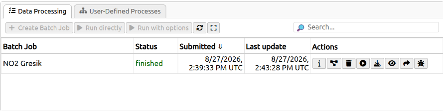
Fig. 2 Pantauan batch job NO2 Gresik yang telah selesai (status finished) pada openEO Web Editor. Bisa dilihat langsung di https://editor.openeo.org/.#
2. Visualisasi Peta (folium)#
Lokasi pengamatan di Kabupaten Gresik divisualisasikan pada peta interaktif menggunakan library folium. Area polygon AOI ditandai pada peta.
3. Menampilkan Hasil Data CSV#
Setelah data dikonversi menjadi CSV, kita dapat menampilkan isi data menggunakan pandas pd.read_csv diikuti .head() untuk melihat 5 baris paling atas.
3.1 CH4#
| date | CH4 | |
|---|---|---|
| 0 | 2025-08-24 | NaN |
| 1 | 2025-08-25 | 1867.289429 |
| 2 | 2025-08-26 | NaN |
| 3 | 2025-08-27 | NaN |
| 4 | 2025-08-28 | NaN |
3.2 CO#
| date | CO | |
|---|---|---|
| 0 | 2025-08-24 | 0.037918 |
| 1 | 2025-08-25 | 0.028240 |
| 2 | 2025-08-26 | NaN |
| 3 | 2025-08-27 | 0.034187 |
| 4 | 2025-08-28 | 0.027450 |
3.3 NO2#
| date | NO2 | |
|---|---|---|
| 0 | 2025-08-24 | 0.000096 |
| 1 | 2025-08-25 | 0.000046 |
| 2 | 2025-08-26 | 0.000068 |
| 3 | 2025-08-27 | NaN |
| 4 | 2025-08-28 | 0.000060 |
3.4 SO2#
| date | SO2 | |
|---|---|---|
| 0 | 2025-08-24 | 0.000347 |
| 1 | 2025-08-25 | 0.000817 |
| 2 | 2025-08-26 | -0.000799 |
| 3 | 2025-08-27 | -0.000513 |
| 4 | 2025-08-28 | 0.000327 |
3.5 polutan_gresik.csv (Gabungan 4 Polutan)#
| date | CH4 | CO | NO2 | SO2 | |
|---|---|---|---|---|---|
| 0 | 2025-08-24 | NaN | 0.037918 | 0.000096 | 0.000347 |
| 1 | 2025-08-25 | 1867.289429 | 0.028240 | 0.000046 | 0.000817 |
| 2 | 2025-08-26 | NaN | NaN | 0.000068 | -0.000799 |
| 3 | 2025-08-27 | NaN | 0.034187 | NaN | -0.000513 |
| 4 | 2025-08-28 | NaN | 0.027450 | 0.000060 | 0.000327 |
3.6 Kenapa Ada Nilai NaN?#
Perhatikan pada hasil data di atas, ada beberapa baris yang menunjukkan nilai NaN (Not a Number). Artinya, pada tanggal tersebut tidak ada data pengamatan yang tercatat.
Penyebab munculnya NaN pada data satelit Sentinel-5P antara lain:
Tidak ada lintasan satelit — Sentinel-5P tidak melewati lokasi Kabupaten Gresik setiap hari. Satelit memiliki revisit time (jadwal orbit) tertentu, sehingga ada hari-hari tertentu yang tidak terlewati.
Tutupan awan (cloud cover) — Sentinel-5P menggunakan sensor yang hasilnya dipengaruhi oleh kondisi atmosfer. Jika area tertutup awan tebal, data tidak valid sehingga dianggap kosong.
Validasi kualitas (quality flag) — data yang kualitasnya buruk (misal nilai ekstrem karena noise instrumen) dibuang oleh proses validasi data, sehingga menghasilkan celah (gap) pada deret waktu.
Karena itu, dari total 365 hari dalam setahun, tidak semua tanggal memiliki nilai polutan. Hari-hari yang kosong inilah yang tampil sebagai NaN — dan ini akan dibahas lebih lanjut pada tahap identifikasi missing values di bagian selanjutnya.
4. Identifikasi Kualitas Data#
Pada tahap ini dilakukan identifikasi (mencatat) masalah-masalah pada data, yaitu missing values, outliers, dan noises. Sesuai prinsip CRISP-DM, tahap Data Understanding hanya menemukan dan mencatat masalah tersebut — penanganan (imputasi, menghapus, dsb.) dilakukan pada tahap berikutnya (Data Preparation).
4.1 Implementasi Tools Orange Data Mining#
Selain analisis statistik berbasis kode Python, identifikasi kualitas data (pemeriksaan missing values, pencilan outliers, dan statistik noise) juga diimplementasikan secara visual menggunakan perangkat lunak Orange Data Mining.
Workflow yang dibangun pada Orange Data Mining mencakup beberapa widget utama:
CSV File Import: Membaca berkas deret waktu CSV polutan (CH4,CO,NO2,SO2) dan mengonfigurasi tipe atribut data (memastikan tipe kolom polutan diset ke Numeric).Column Statistics: Memeriksa ringkasan statistik dasar setiap kolom secara otomatis, mencakup jumlah Missing Values, nilai Rata-rata (Mean \(\mu\)), Standar Deviasi (Std Dev \(\sigma\)), serta tingkat variabilitas (Dispersion).Impute: Mengatur penanganan data kosong. Untuk menyelaraskan populasi analisis dengan metode Python (.dropna()), widgetImputedikonfigurasi ke opsi Remove instances with unknown values (menghapus baris bernilai kosong sebelum pemrosesan outlier).Outliers: Melakukan deteksi pencilan otomatis menggunakan algoritma Isolation Forest dengan tingkat kontaminasiContamination = 5%(0.05).Data Table&Scatter Plot: Menampilkan tabel observasi yang terlabeli Outlier / Inlier serta memvisualisasikan sebaran titik pencilan data.
4.2 Missing Values#
Missing values adalah tanggal yang tidak memiliki nilai polutan (NaN). Berikut identifikasinya:
ch4
Jumlah missing value pada data ch4 : 335
Jumlah data terisi (valid) pada data ch4 : 31
{kind=link}
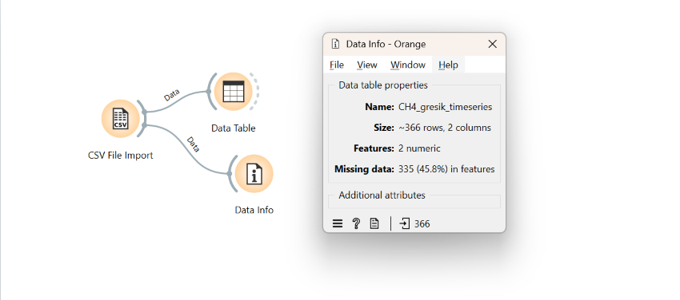
co
Jumlah missing value pada data co : 157
Jumlah data terisi (valid) pada data co : 209
{kind=link}
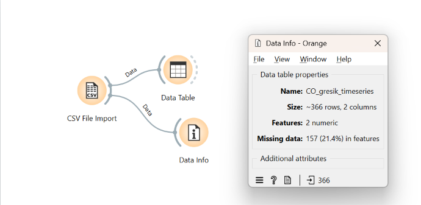
no2
Jumlah missing value pada data no2 : 179
Jumlah data terisi (valid) pada data no2 : 187
{kind=link}
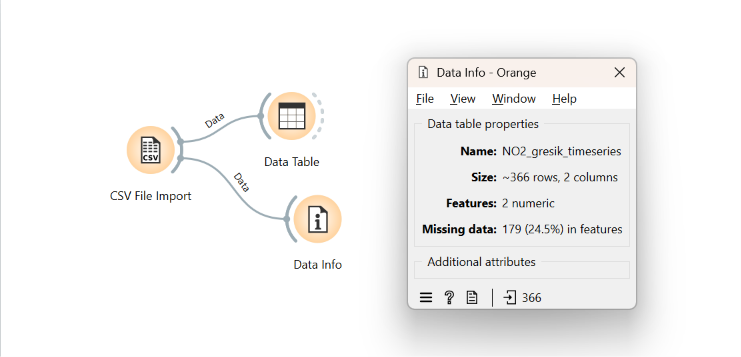
so2
Jumlah missing value pada data so2 : 144
Jumlah data terisi (valid) pada data so2 : 222
{kind=link}
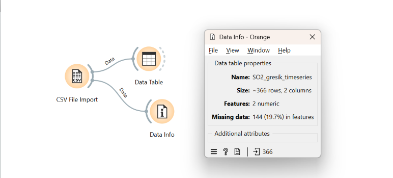
4.3 Outliers#
Outliers (pencilan) adalah nilai pengamatan yang menyimpang secara signifikan dari mayoritas data dalam suatu variabel. Pada dataset ini, deteksi outlier dilakukan menggunakan algoritma Isolation Forest dengan tingkat kontaminasi (contamination) sebesar 0.05 (5%).
Sebelum deteksi outlier dilakukan, data bernilai kosong (missing values / NaN) terlebih dahulu dibuang (menggunakan dropna() pada Python atau widget Impute \(\rightarrow\) Remove instances with unknown values pada Orange Data Mining) agar populasi perhitungan pencilan selaras.
Berikut adalah hasil identifikasi outlier untuk masing-masing polutan:
ch4
Jumlah outlier pada data ch4 : 2
Jumlah tidak outlier (normal) pada data ch4 : 29
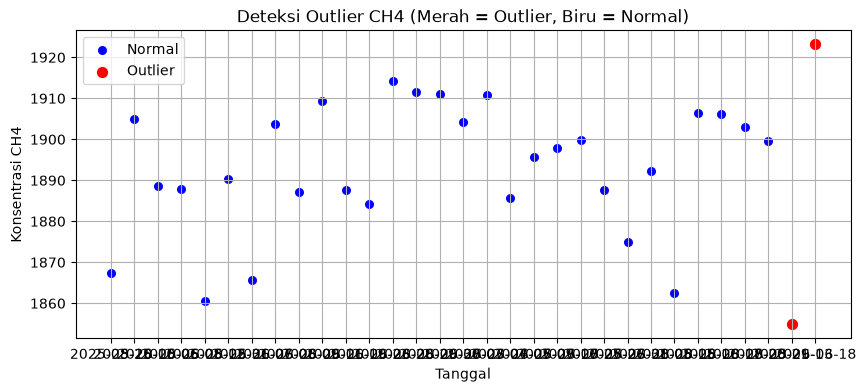
{kind=link}
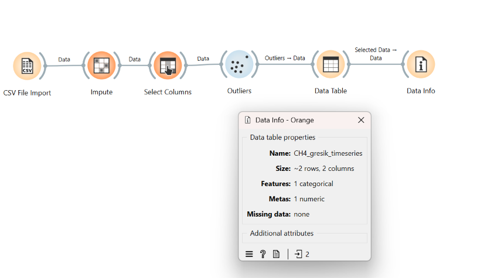
co
Jumlah outlier pada data co : 11
Jumlah tidak outlier (normal) pada data co : 198
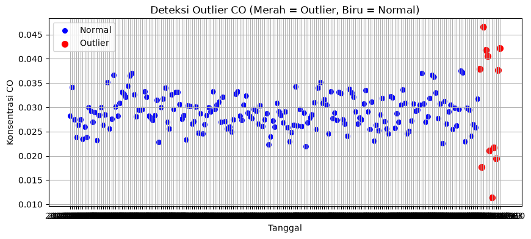
{kind=link}
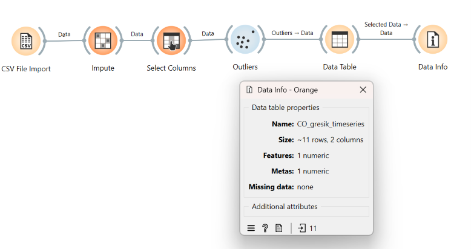
no2
Jumlah outlier pada data no2 : 10
Jumlah tidak outlier (normal) pada data no2 : 177
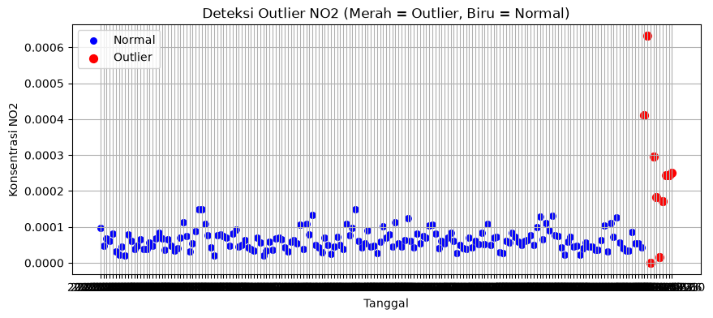
{kind=link}
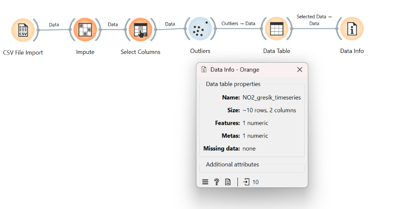
so2
Jumlah outlier pada data so2 : 12
Jumlah tidak outlier (normal) pada data so2 : 210
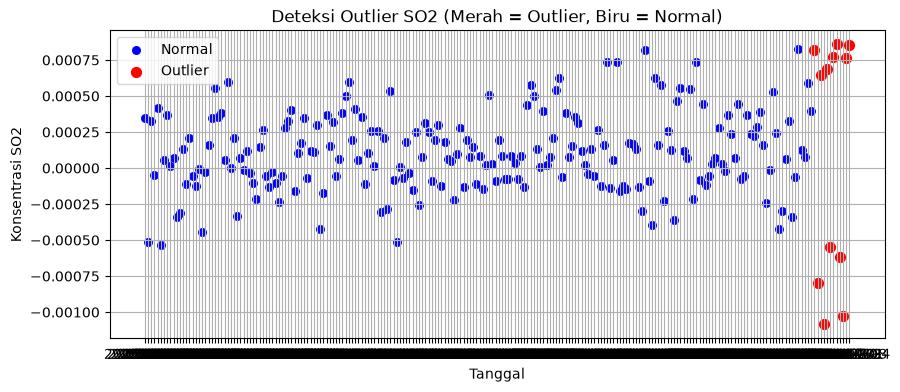
{kind=link}
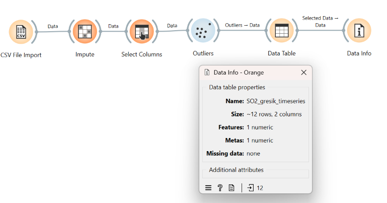
4.4 Noise#
Noise (derau) adalah fluktuasi acak frekuensi tinggi (random noise) pada data pengamatan yang disebabkan oleh kondisi dinamika atmosfer mikro, keterbatasan presisi instrumen satelit, atau interferensi cuaca lokal. Berbeda dari outlier yang berupa pencilan ekstrem tunggal, noise diukur berdasarkan tingkat fluktuasi atau variabilitas relatif data.
Untuk mengukur dan mengidentifikasi noise pada data polutan, digunakan 3 indikator statistik utama:
Rata-rata (\(\mu\)): Nilai rata-rata konsentrasi polutan.
Standar Deviasi (\(\sigma\)): Ukuran sebaran atau besar fluktuasi data dari rata-rata.
Koefisien Variasi (\(CV\)): Rasio fluktuasi relatif terhadap rata-rata (\(CV = \frac{\sigma}{\mu} \times 100\%\)). Semakin tinggi nilai \(CV\), semakin tinggi tingkat derau (noise) atau variabilitas relatifnya.
Berikut adalah hasil identifikasi dan analisis noise untuk masing-masing polutan:
ch4
Rata-rata CH4 : 1892.8467
Standar Deviasi CH4 : 17.3635
Koefisien Variasi (CV) CH4 : 0.92%
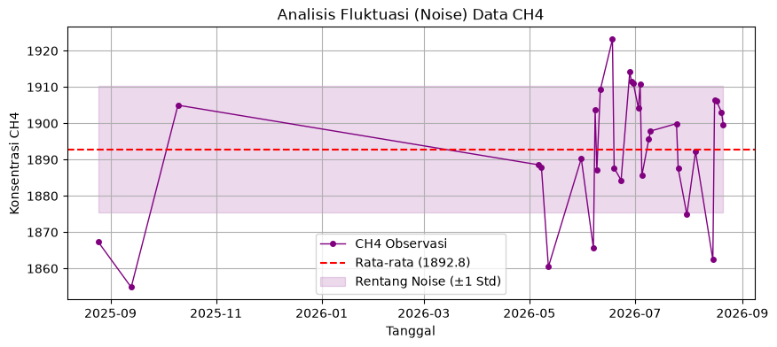
co
Rata-rata CO : 0.029098
Standar Deviasi CO : 0.004264
Koefisien Variasi (CV) CO : 14.66%
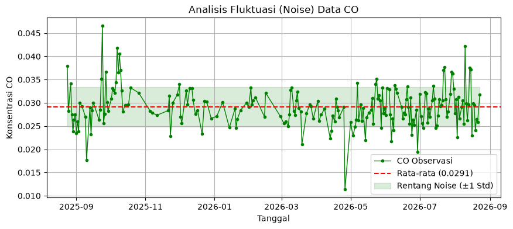
no2
Rata-rata NO2 : 0.000073
Standar Deviasi NO2 : 0.000063
Koefisien Variasi (CV) NO2 : 86.60%
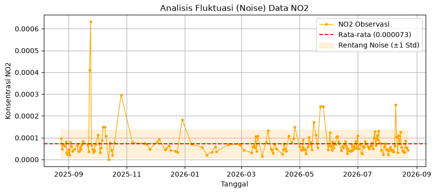
so2
Rata-rata SO2 : 0.000110
Standar Deviasi SO2 : 0.000320
Koefisien Variasi (CV) SO2 : 290.45%
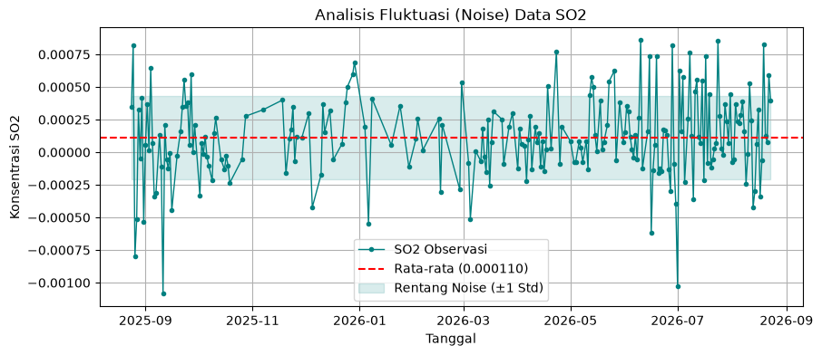
4.5 Visualisasi Komparatif 4 Polutan (Style Copernicus)#
Untuk membandingkan tren perubahan konsentrasi ke-4 polutan (CH4, CO, NO2, SO2) secara bersamaan sepanjang periode pengamatan di Kabupaten Gresik, dibuat visualisasi Dual X-Axis Line Plot dengan gaya visualisasi Copernicus Sentinel-5P.
{kind=link}
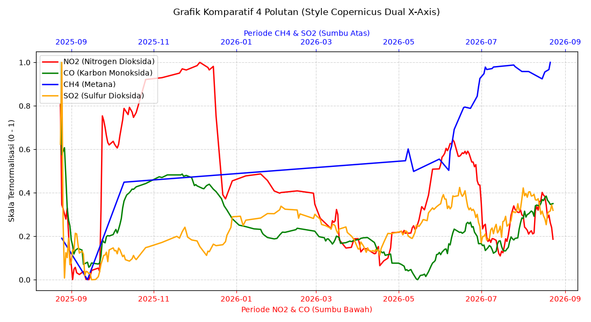
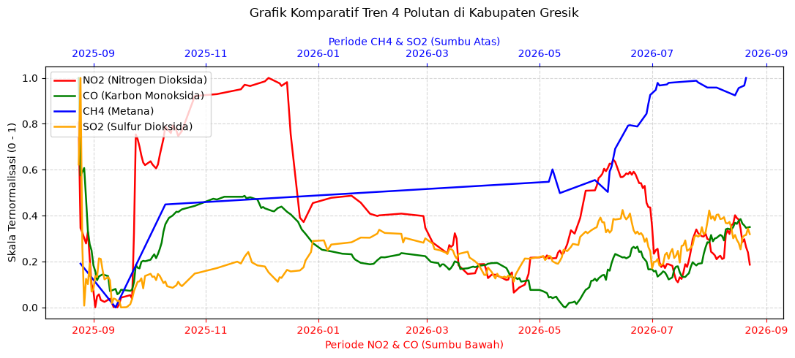
Penjelasan Rinci Komponen Grafik:#
Struktur Dual X-Axis (Sumbu X Ganda):
Sumbu X Bawah (Merah): Digunakan sebagai penanda garis waktu tanggal untuk polutan NO2 dan CO.
Sumbu X Atas (Biru): Digunakan sebagai penanda garis waktu tanggal untuk polutan CH4 dan SO2.
Fungsi
twiny(): Memungkinkan 2 pasangan polutan menggunakan sumbu Y bersama di sebelah kiri, namun memiliki skala waktu horizontal di atas dan bawah untuk menjaga keterbacaan grafik.
Keterangan 4 Warna Polutan:
🔴 Garis Merah (NO2): Menunjukkan tren emisi gas Nitrogen Dioksida (berasal dari transportasi kendaraan dan pembakaran industri).
🟢 Garis Hijau (CO): Menunjukkan tren emisi gas Karbon Monoksida (berasal dari pembuangan asap pembakaran).
🔵 Garis Biru (CH4): Menunjukkan tren konsentrasi gas Metana (gas rumah kaca dari zona industri/limbah/tambang).
🟠 Garis Oranye (SO2): Menunjukkan tren emisi gas Sulfur Dioksida (berasal dari pembakaran batu bara & pemrosesan industri).
Mengapa Menggunakan Skala Ternormalisasi (0 - 1) di Sumbu Y?:
Nilai asli dari masing-masing polutan memiliki rentang angka yang jauh berbeda (misalnya: CH4 bernilai tinggi sekitar ~1890, sedangkan NO2 bernilai kecil sekitar ~0.00007).
Jika diplot tanpa skala bersama, garis NO2, CO, dan SO2 akan terlihat “gepeng/datar” di angka 0.
Dengan Normalisasi Min-Max (\(0 - 1\)), semua garis polutan dibawa ke rentang proporsional yang sama (\(0\) = konsentrasi terendah, \(1\) = konsentrasi tertinggi), sehingga naik-turunnya pola tren ke-4 polutan dapat dibandingkan secara langsung.
Penghalusan Grafik (30-Day Moving Average):
Garis grafik dihaluskan menggunakan teknik rolling mean 30 hari (
.rolling(window=30).mean()) persis seperti pada kode acuan Copernicus.Hal ini berfungsi untuk meredam derau (noise) harian, sehingga garis grafik terlihat mulus dan pembaca dapat melihat tren kenaikan/penurunan jangka panjang di Kabupaten Gresik secara jernih.
Cara Membaca Arah dan Gerakan Garis Grafik:
📈 Garis Naik ke Atas: Menandakan konsentrasi polutan di Kabupaten Gresik sedang meningkat / tinggi (akibat lonjakan emisi industri, volume kendaraan padat, atau musim kemarau di mana emisi terperangkap di atmosfer).
📉 Garis Turun ke Bawah: Menandakan kualitas udara sedang lebih bersih / polusi rendah (akibat pencucian polutan oleh air hujan / rain washout, berkurangnya aktivitas saat hari libur, atau tiupan angin kencang).
➡️ Garis di Tengah / Datar: Menandakan konsentrasi polutan berada pada kondisi rata-rata latar belakang yang stabil.
〰️ Garis Fluktuasi (Bergerigi / “Gleot-gleot”): Menandakan adanya variasi perubahan cuaca harian yang cepat serta derau (noise) instrumen pengamatan satelit Sentinel-5P.
5. Integrasi Cloud Database & Analytics Workflow (Aiven, DBeaver, & KNIME)#
Selain pemrosesan secara lokal dengan Python dan Orange Data Mining, alur pemahaman data (Data Understanding) ini juga diimplementasikan menggunakan infrastruktur cloud database dan perangkat analitik visual: Aiven PostgreSQL, DBeaver, dan KNIME Analytics Platform.
5.1 Konfigurasi Cloud Database (Aiven PostgreSQL)#
Aiven digunakan sebagai penyedia layanan Cloud Database terkelola (managed database) berbasis PostgreSQL. Langkah-langkah konfigurasinya:
Membuat layanan (service) baru bertipe PostgreSQL pada konsol platform Aiven Cloud.
Mengonfigurasi parameter koneksi jaringan, database name, username, password, serta sertifikat SSL (
CA Certificate).Mencatat kredensial koneksi Host dan Port publik untuk dihubungkan dengan perangkat GUI Client dan KNIME.
{kind=link}
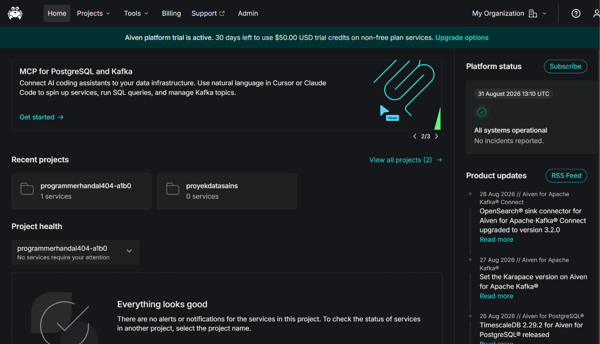
Fig. 3 Konfigurasi Service Cloud Database PostgreSQL pada Console Aiven#
5.2 Pengelolaan & Pengujian Data (DBeaver Client)#
DBeaver digunakan sebagai Database Management Tool (GUI Client) untuk mengelola struktur tabel relasional dan menguji koneksi jaringan ke cloud Aiven:
Membuat koneksi baru (New Database Connection) berjenis PostgreSQL di DBeaver menggunakan Host, Port, dan kredensial Aiven.
Mengimpor dataset
polutan_gresik.csvke dalam tabel relasional PostgreSQL bernamapolutan_gresik.Menjalankan SQL Query
SELECT * FROM polutan_gresik;untuk memastikan data terstruktur dengan benar di dalam cloud database.
{kind=link}
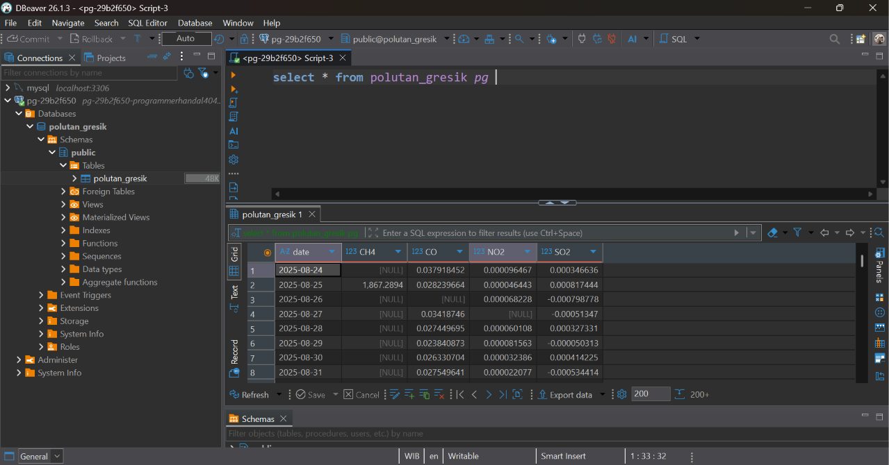
Fig. 4 Pengelolaan Tabel dan Query Data pada DBeaver Client#
5.3 Workflow Pipeline Data (KNIME Analytics Platform)#
KNIME Analytics Platform digunakan untuk membangun alur kerja pemrosesan data (Data Pipeline) secara visual tanpa pengkodean (low-code). Node-node yang digunakan dalam workflow ini antara lain:
PostgreSQL Connector: Mengonfigurasi parameter koneksi JDBC (Host, Port, Database Name, Username, Password, dan SSL) untuk menghubungkan KNIME secara langsung ke cloud database Aiven PostgreSQL.DB Table Selector: Memilih tabel sasaranpolutan_gresikdari skema database PostgreSQL di cloud.DB Reader: Mengeksekusi query ekstraksi dan membaca seluruh data dari server cloud Aiven ke dalam format tabel memori KNIME.Table View: Menampilkan pratinjau isi tabel data observasi secara interaktif.Statistics&Statistics View: Mengekstraksi ringkasan statistik deskriptif dan visualisasi distribusi histogram dari setiap atribut polutan.
{kind=link}
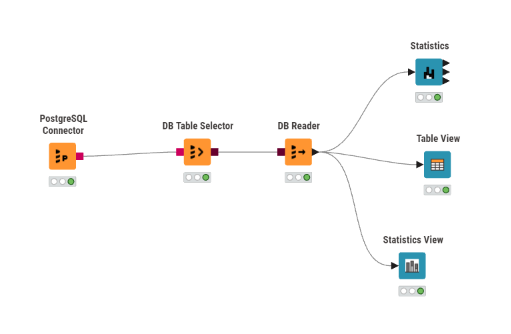
Fig. 5 Alur Kerja (Workflow Pipeline) Ekstraksi Data PostgreSQL pada KNIME#
5.4 Hasil Eksplorasi Statistik Dasar (Statistics View & Histogram)#
Node Statistics View pada KNIME menghasilkan tabel ringkasan eksplorasi data (Exploratory Data Analysis) yang mencakup 16 indikator statistik dasar serta histogram distribusi frekuensi untuk ke-4 polutan (CH4, CO, NO2, SO2):
1. Tabel Indikator Statistik Deskriptif (Min, Max, Mean, Std Dev, Skewness, Kurtosis, & Missing Values)#
{kind=link}
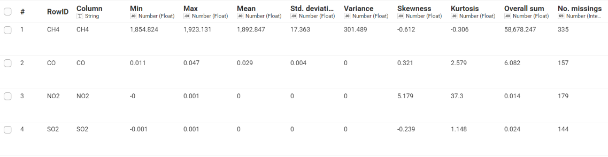
Fig. 6 Tabel Statistik Deskriptif (Min, Max, Mean, Std Dev, Variance, Skewness, Kurtosis, & No. Missings) pada KNIME#
{kind=link}
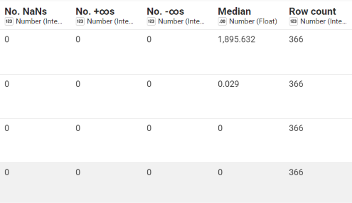
Fig. 7 Tabel Nilai Median (Aktif) dan Total Row Count (366 Baris) pada KNIME#
2. Visualisasi Grafik Histogram Distribusi Per Polutan#
Berikut adalah bentuk grafik distribusi histogram yang diekstrak oleh node Statistics View di KNIME untuk masing-masing polutan:
Polutan |
Grafik Histogram KNIME |
Ringkasan Distribusi |
|---|---|---|
CH4 |
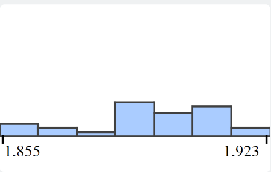 |
Simetris terpusat di sekitar rata-rata (\(1,892.847\text{ ppb}\)). |
CO |
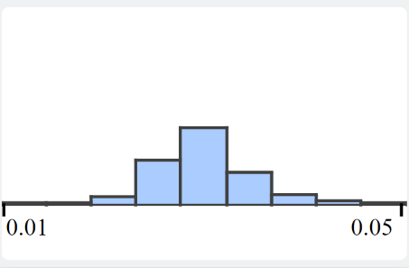 |
Berbentuk lonceng simetris (Normal Distribution / puncak \(0.029\)). |
NO2 |
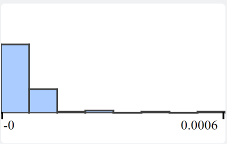 |
Miring ke kanan (Right-Skewed / Skewness = \(5.179\)). |
SO2 |
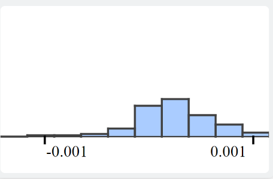 |
Miring ke kanan dengan konsentrasi dominan mendekati 0. |
💡 Penjelasan Rinci Karakteristik Distribusi Data Per Polutan:#
CH4 (Metana):
Analisis Bentuk: Terdistribusi relatif simetris dan terpusat di sekitar nilai rata-ratanya (\(1,892.847\text{ ppb}\)), dengan rentang data antara \(1,854.824\) hingga \(1,923.131\).
Interpretasi Data: Konsentrasi gas Metana di Kabupaten Gresik tergolong sangat stabil. Gas CH4 di atmosfer tidak mengalami fluktuasi ekstrem harian, sehingga sebaran nilainya berkumpul merata di sekitar nilai rata-rata latar belakang bumi (~1890 ppb).
CO (Karbon Monoksida):
Analisis Bentuk: Membentuk kurva simetris menyerupai lonceng (Bell-Shaped / Normal-Like Distribution), dengan puncak frekuensi tertinggi berada tepat di nilai rata-ratanya (\(0.029\text{ mol}/m^2\)).
Interpretasi Data: Emisi Karbon Monoksida (berasal dari pembuangan asap kendaraan bermotor dan industri) mengikuti pola distribusi normal secara alami. Sebagian besar hari di Gresik memiliki tingkat polusi CO sedang (\(0.029\)), sementara hari dengan tingkat polusi sangat rendah (\(0.011\)) atau sangat tinggi (\(0.047\)) jumlahnya relatif sedikit dan seimbang.
NO2 (Nitrogen Dioksida):
Analisis Bentuk: Menumpuk sangat tinggi di sebelah kiri (mendekati \(0\)) dengan ekor panjang menjulang ke kanan (Miring ke Kanan / Right-Skewed Distribution dengan nilai Skewness sangat tinggi = \(5.179\)).
Interpretasi Data: Pada mayoritas hari dalam setahun, konsentrasi gas NO2 di Kabupaten Gresik tergolong sangat rendah (kualitas udara relatif bersih). Namun, terdapat beberapa hari tertentu yang mengalami lonjakan pencilan ekstrem (outliers) sangat tinggi akibat lonjakan emisi lalu lintas/industri atau kondisi cuaca mikro yang terperangkap di permukaan tanah.
SO2 (Sulfur Dioksida):
Analisis Bentuk: Menumpuk dominan di angka mendekati \(0\) dengan ekor tipis memanjang ke kanan (Right-Skewed).
Interpretasi Data: Konsentrasi gas SO2 sebagian besar waktu berada pada tingkat yang sangat kecil/aman. Konsentrasi tinggi SO2 hanya terjadi secara sporadis pada hari-hari tertentu akibat aktivitas spesifik pembakaran bahan bakar fosil/batu bara dari sektor industri di wilayah Gresik.
5.5 Perhitungan Manual Statistik Deskriptif (Rumus & Langkah Kerja)#
Sub-bab ini menyediakan ruang kerangka dan penjelasan rumus perhitungan statistik secara manual dari nilai minimum hingga konstruksi grafik histogram untuk memverifikasi hasil pemrosesan perangkat lunak (Python & KNIME) dari data observasi valid sebanyak \(N\):
1. Nilai Minimum (\(\text{Min}\))#
Konsep: Menentukan nilai observasi terkecil dari kumpulan data terisi \(X_1, X_2, \dots, X_N\):
2. Nilai Maksimum (\(\text{Max}\))#
Konsep: Menentukan nilai observasi terbesar dari kumpulan data terisi \(X_1, X_2, \dots, X_N\):
3. Nilai Rata-Rata (Mean / \(\bar{X}\))#
Rumus Matematika:
Langkah Kerja Manual:
Hitung total penjumlahan seluruh nilai data observasi valid yang terisi (\(\text{Overall sum} = \sum X_i = X_1 + X_2 + \dots + X_N\)).
Bagi nilai \(\text{Overall sum}\) tersebut dengan banyaknya jumlah data valid (\(N\)).
4. Nilai Tengah (Median / \(Me\))#
Langkah Kerja Manual:
Urutkan seluruh data valid dari nilai terkecil ke nilai terbesar: \(X_{(1)} \le X_{(2)} \le \dots \le X_{(N)}\).
Jika jumlah data \(N\) ganjil, nilai median terletak tepat di posisi tengah:
Jika jumlah data \(N\) genap, nilai median adalah rata-rata dari dua nilai di posisi tengah:
5. Variansi Sampel (\(s^2\))#
Rumus Variansi Sampel (\(s^2\)):
Langkah Kerja Manual:
Hitung selisih tiap nilai data dengan nilai rata-ratanya: \((X_i - \bar{X})\).
Kuadratkan masing-masing nilai selisih tersebut: \((X_i - \bar{X})^2\).
Jumlahkan seluruh hasil kuadrat selisih dan bagi dengan derajat kebebasan \((N - 1)\).
6. Standar Deviasi Sampel (\(s\))#
Rumus Standar Deviasi (\(s\)):
Langkah Kerja Manual:
Hitung akar kuadrat positif dari nilai variansi sampel (\(s^2\)) yang telah diperoleh pada langkah sebelumnya.
7. Kemiringan (Skewness / \(S_k\))#
Rumus Skewness Sampel (\(S_k\)) (Momen Ketiga):
Langkah Kerja Manual:
Hitung nilai terstandarisasi (z-score) untuk tiap data: \(Z_i = \frac{X_i - \bar{X}}{s}\).
Pangkat-tigakan nilai \(Z_i\) tersebut: \((Z_i)^3\).
Jumlahkan seluruh hasil pangkat tiga dan kalikan dengan faktor koreksi sampel \(\frac{N}{(N-1)(N-2)}\).
8. Keruncingan (Kurtosis / \(K\))#
Rumus Kurtosis Sampel (\(K\)) (Momen Keempat):
Langkah Kerja Manual:
Pangkat-empatkan nilai z-score tiap data: \((Z_i)^4\).
Kalikan jumlah \(\sum (Z_i)^4\) dengan faktor bobot populasi sampel dan kurangi dengan faktor penyesuaian distribusi normal \(3\).
9. Konstruksi Tabel Distribusi Frekuensi & Grafik Histogram#
Penentuan Jumlah Kelas (\(k\)) (Menggunakan Aturan Sturges):
Penentuan Lebar Interval Kelas (\(W\)):
Langkah Konstruksi Histogram:
Tentukan batas bawah dan batas atas untuk setiap rentang interval kelas \([L_j, U_j)\) sebanyak \(k\) kelas.
Hitung jumlah frekuensi observasi (\(f_j\)) yang jatuh pada masing-masing interval kelas.
Petakan interval nilai data pada sumbu horizontal (X) dan nilai frekuensi \(f_j\) pada sumbu vertikal (Y) untuk membentuk grafik batang Histogram.